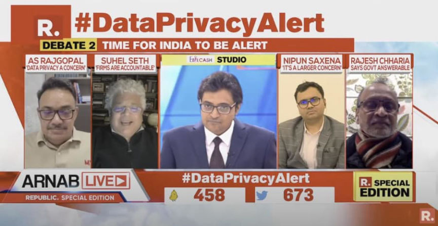
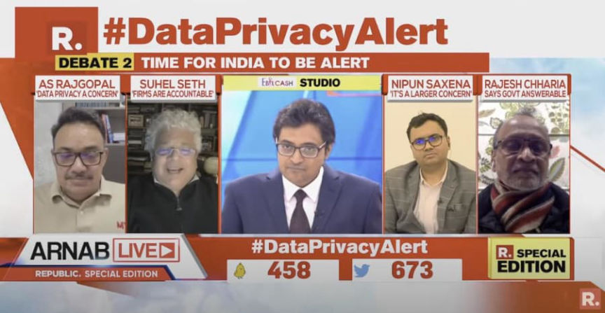

VPN Providers in India Required to Keep Logs Under New Law
~2 min read | Published on 2022-06-27, tagged General-News using 395 words.
VPN Providers with servers in India are required to maintain logs of customer names, I.P. addresses, and usage patterns.
As of June 27, 2022, data centers, virtual private server (VPS) providers, cloud service providers, and virtual private network (VPN) service providers must comply with new data retention regulations. Service providers are required to maintain logs for five years with the following pieces of information:[list]*Validated names of subscribers/customers hiring the services*Period of hire, including dates*I.P.s allotted to / being used by the members*Email address and I.P. address, and time stamp used at the time of registration / on-boarding*The purpose for hiring services*Validated address and contact numbers*Ownership pattern of the subscribers/customers hiring services[/list]
The Indian Computer Emergency Response Team (CERT-In) directive includes similar requirements for virtual asset service providers, virtual asset exchange providers, and custodian wallet providers. Exchanges and custodial wallet providers are required to maintain all Know Your Customer (KYC) information and records of financial transactions for five years.

In response to the regulations, some VPN providers have removed their servers in India.
ExpressVPN:
“Rest assured, our users will still be able to connect to VPN servers that will give them Indian I.P. addresses and allow them to access the internet as if they were located in India. These “virtual” India servers will instead be physically located in Singapore and the U.K.”
“In terms of the user experience, there is minimal difference. For anyone wanting to connect to an Indian server, simply select the VPN server location “India (via Singapore)” or “India (via the U.K.).”
“Virtual server locations are not new to ExpressVPN; in fact, we have been operating our “India (via the U.K.)” server location for several years. With virtual locations, the registered I.P. address matches the country you have chosen to connect to, while the server is physically located in another country. Virtual locations are used, where necessary, to provide faster, more reliable connections.”
Mullvad, which is one of the most well-known and trusted VPN providers in the industry, added a section to its FAQ:
There is a law to collect user data in India and other countries. Does this affect Mullvad?
“Mullvad does not collect user data. Mullvad is based in Sweden and none of the Swedish regulations (https://mullvad.net/help/swedish-legislation/) can force VPN providers to secretly collect traffic-related data. We also have no servers, infrastructure or staff in India.”
CERT-In Directions pdf
As of June 27, 2022, data centers, virtual private server (VPS) providers, cloud service providers, and virtual private network (VPN) service providers must comply with new data retention regulations. Service providers are required to maintain logs for five years with the following pieces of information:[list]*Validated names of subscribers/customers hiring the services*Period of hire, including dates*I.P.s allotted to / being used by the members*Email address and I.P. address, and time stamp used at the time of registration / on-boarding*The purpose for hiring services*Validated address and contact numbers*Ownership pattern of the subscribers/customers hiring services[/list]
The Indian Computer Emergency Response Team (CERT-In) directive includes similar requirements for virtual asset service providers, virtual asset exchange providers, and custodian wallet providers. Exchanges and custodial wallet providers are required to maintain all Know Your Customer (KYC) information and records of financial transactions for five years.

Arnab Goswami often hosts entertaining debates about topics relevant to India. Lots of yelling.
In response to the regulations, some VPN providers have removed their servers in India.
ExpressVPN:
“Rest assured, our users will still be able to connect to VPN servers that will give them Indian I.P. addresses and allow them to access the internet as if they were located in India. These “virtual” India servers will instead be physically located in Singapore and the U.K.”
“In terms of the user experience, there is minimal difference. For anyone wanting to connect to an Indian server, simply select the VPN server location “India (via Singapore)” or “India (via the U.K.).”
“Virtual server locations are not new to ExpressVPN; in fact, we have been operating our “India (via the U.K.)” server location for several years. With virtual locations, the registered I.P. address matches the country you have chosen to connect to, while the server is physically located in another country. Virtual locations are used, where necessary, to provide faster, more reliable connections.”
Mullvad, which is one of the most well-known and trusted VPN providers in the industry, added a section to its FAQ:
There is a law to collect user data in India and other countries. Does this affect Mullvad?
“Mullvad does not collect user data. Mullvad is based in Sweden and none of the Swedish regulations (https://mullvad.net/help/swedish-legislation/) can force VPN providers to secretly collect traffic-related data. We also have no servers, infrastructure or staff in India.”
CERT-In Directions pdf